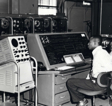

First Generation Computers-Vacuum Tubes (1940-1956)
The first computer systems used vacuum tubes for circuitry and magnetic drums for memory, and were often enormous, taking up entire rooms. These computers were very expensive to operate and in addition to using a great deal of electricity, the first computers generated a lot of heat, which was often the cause of malfunctions.
First generation computers relied on machine language, the lowest-level programming language understood by computers, to perform operations, and they could only solve one problem at a time. It would take operators days or even weeks to set-up a new problem. Input was based on punched cards and paper tape, and output was displayed on printouts.
The UNIVAC and ENIAC computers are examples of first-generation computing devices. The UNIVAC was the first commercial computer delivered to a business client, the U.S. Census Bureau in 1951.
|  |  |